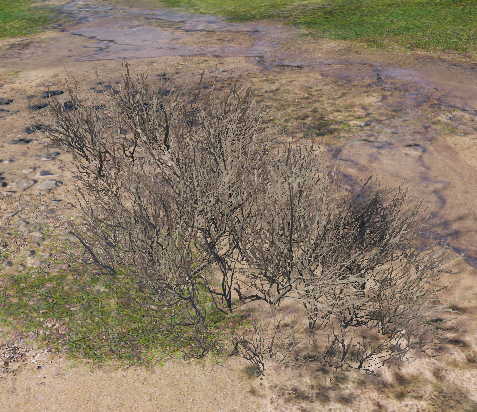
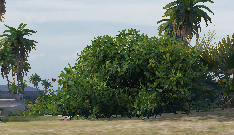

Los valores de camuflaje en world of tanks son un tema muy importante en este juego, aquí tendrás una calculadora con los valores exactos de la proximidad con la que serás descubierto.
En esta tabla verás los puntos de camuflaje que te suma la red por un lado,
y por otro lado los puntos que suma
si tienes pintado el chasis
(ESTE VALOR APARECE EN COLOR VERDE EN ESTA TABLA)
| Efectos de la RED CAMUFLAJE/PINTURA CAMUFLAJE | ||||
|---|---|---|---|---|
| Pesados | AntiTanques | Ligeros | Artilleria | Medios |
| +5/+2 | +15/+4 | +10/+3 | +5/+2 | +10/+3 |
En esta tabla verás los puntos de camuflaje que te suma los arbustos
siendo; Arbustos pequeños 25puntos y Grandes 50 puntos
| Efectos de Arbustos | ||||
|---|---|---|---|---|
|  ArbustoFino |
 ArbustoGrueso |
|||
| 2 FINOS | 1 GRUESO Y 1 FINO | 3 FINOS | 1 GRUESO Y 2 FINOS | 4 FINOS |
| +50 | +75 | +75 | +80 | +80 |
Recuerda, tanto los edificios como los árboles dan camuflaje. Si estás detrás de un edificio y no has sido descubierto, tu camuflaje será del 100%. Puedes utilizar los árboles como cobertura, funcionan exactamente igual que los arbustos, trata de tirar cuantos te hagan falta. ¡¡PERO CUIDADO!!, Los enemigos dispararán al ver caer árboles por la zona...